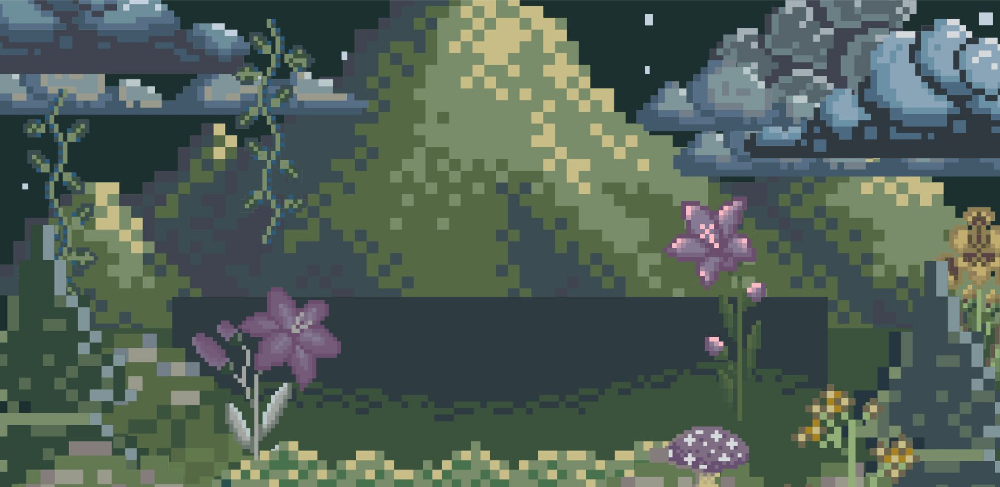
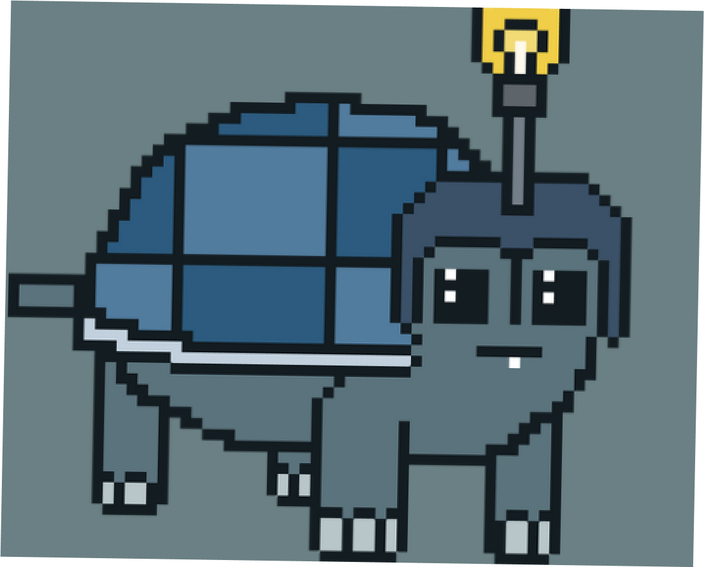

Bem Vindo!

Bem Vindo!
Sobre o Projeto

Nosso projeto, "Sr.Torto," é uma plataforma gamificada na web que visa
ajudar indivíduos com ansiedade e depressão a adotar hábitos mais
saudáveis. Através da conclusão de tarefas, os usuários serão
recompensados, incentivando a busca por ajuda médica.
O objetivo é aumentar a conscientização sobre a depressão, proporcionar
acesso a recursos informativos, oferecer apoio emocional e ferramentas
de autogestão, com a esperança de melhorar o bem-estar emocional dos
usuários e reduzir o estigma associado à depressão.